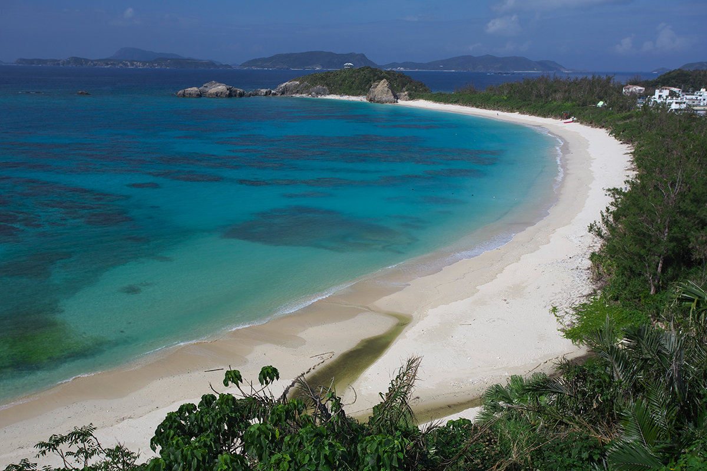
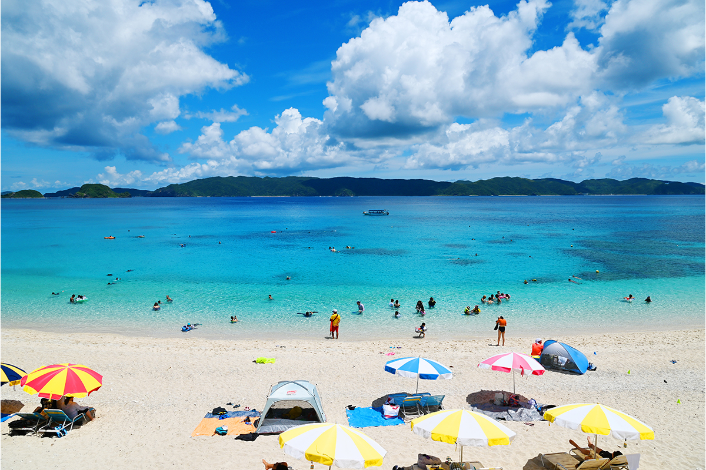
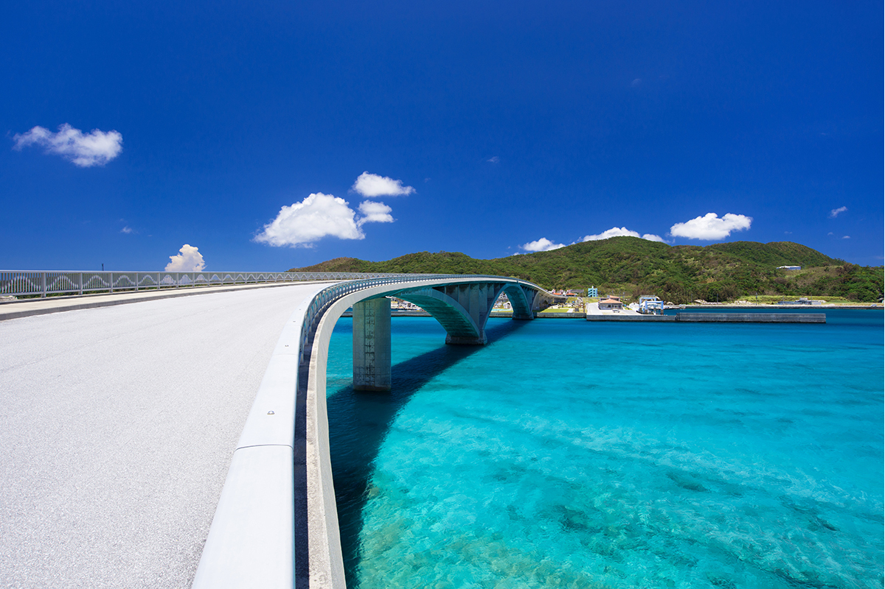
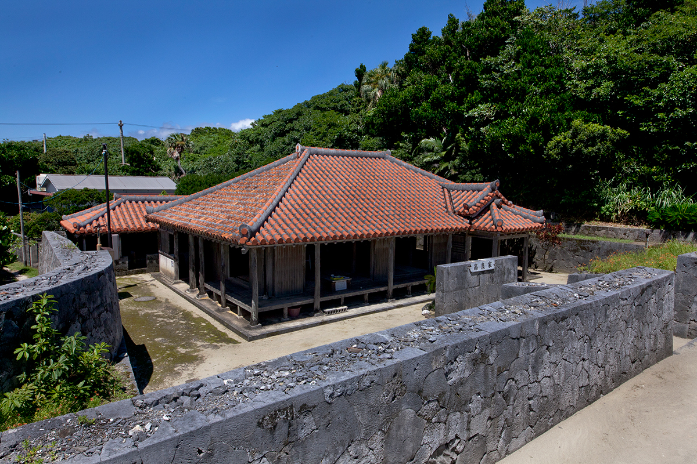

Префектура Окинава · острова Керама · море и острова
Острова Керама: Токасики, Дзамами, Ака и Гэрума в часе пути от Нахи

Острова Керама лежат к западу от Нахи, и до них добираются на скоростном катере меньше чем за час. Здесь можно выбрать остров по настроению: большой Токасики с горами и пляжем Ахарэн, Дзамами с китами, Ака с черепахами или совсем маленький Гэрума.
Архипелаг
Море в часе от Нахи
В префектуре Окинава около 160 островов, больших и малых. Обитаемых среди них немного: кроме самого острова Окинава, это 37 островов, у каждого из которых своя природа и свой уклад. Среди них острова Керама к западу от Нахи. Катера и паромы уходят туда из порта Томари в Нахе, и даже на пароме дорога редко занимает больше двух часов.
Вода вокруг архипелага такая прозрачная и яркая, что у её оттенка есть своё название: «керамский синий». Его лучше всего видно с маской и трубкой или с аквалангом. Ниже четыре обитаемых острова группы: Токасики, Дзамами, Ака и Гэрума.
Токасики
Самый большой остров Керамы
Токасики крупнее остальных островов архипелага: 15,31 квадратного километра при длине береговой линии 25 километров. На нём живут 695 человек (данные 2024 года). Остров известен прежде всего пляжем Ахарэн, где белый песок тянется плавной дугой вдоль бухты.
Воды вокруг Токасики служат местом размножения горбатых китов, а у берегов насчитывают около 20 мест для дайвинга. Сам остров холмистый, с резким рельефом, поэтому здесь хватает занятий и на суше: например, треккинга. Высшая точка, гора Акама, поднимается на 227,3 метра.
По острову ездят на автобусе, такси и арендованной машине, а между бухтами ходит морское такси.
Остров Токасики
- Как добраться
- из порта Томари в Нахе скоростным катером «Марин лайнер Токасики» около 35 минут или паромом «Ферри Токасики» около 1 часа 15 минут
- Телефон
- +81 98-987-2333 (отдел туризма села Токасики)
Дзамами
Изумрудная вода и киты

Дзамами окружён белыми пляжами и водой изумрудно-голубого цвета. Остров вдвое меньше Токасики (6,70 квадратного километра), на нём живут 583 человека. Лучший пляж острова, Фурудзамами, отличается особенно прозрачной водой: субтропических рыб здесь можно разглядеть совсем рядом, прямо у берега.
Зимой Дзамами становится местом китового сафари. С борта лодки наблюдают за горбатыми китами, которые приплывают в эти воды.
Передвигаться по острову можно на сельском автобусе, арендованной машине, мопеде, велосипеде и даже на электросамокате.
Остров Дзамами
- Как добраться
- из порта Томари в Нахе скоростным катером «Куин Дзамами» от 50 минут до 1 часа 10 минут или паромом «Ферри Дзамами» от 1 часа 30 минут до 2 часов
- Телефон
- +81 98-987-2277 (ассоциация туризма села Дзамами)
Ака
Черепахи и кораллы
Ака совсем небольшой: 3,80 квадратного километра и 251 житель. Остров относится к селу Дзамами и соединён большим мостом с соседним Гэрума. С моста открывается вид сверху на ту самую воду «керамского синего» цвета, а если повезёт, внизу можно заметить морскую черепаху.

Главное место для снорклинга на острове это пляж Нисибама. Под водой здесь тянутся коралловые поля.
По Ака ездят на арендованном мопеде или велосипеде.
Остров Ака
- Как добраться
- из порта Томари в Нахе скоростным катером «Куин Дзамами» около 50 минут или паромом «Ферри Дзамами 3» около 1 часа 30 минут; из порта Дзамами катером или паромом 10–15 минут; из порта Ахарэн на Токасики рейсовым судном около 20 минут
- Телефон
- +81 98-987-2277 (ассоциация туризма села Дзамами)
Гэрума
Тихий остров и старый дом
Гэрума самый маленький обитаемый остров села Дзамами: 1,15 квадратного километра, береговая линия 4,9 километра и 61 житель. Время здесь течёт медленно, а пляжи так пустынны, что кажутся частными.

Главная достопримечательность острова это дом семьи Такара, традиционная окинавская усадьба. Её постройки под красной черепичной крышей окружены каменной оградой, сложенной из известняка. По такому дому хорошо видно, как жили на островах в старину.
Своей пристани для катеров из Нахи у Гэрума нет: сначала плывут на Ака, а потом переходят на Гэрума по мосту. Мопед или велосипед берут напрокат на Ака, по острову можно передвигаться и на такси, и просто пешком.
Остров Гэрума
- Как добраться
- из порта Томари в Нахе скоростным катером «Куин Дзамами» до острова Ака около 50 минут или паромом «Ферри Дзамами 3» около 1 часа 30 минут, затем по мосту Ака на Гэрума
- Телефон
- +81 98-987-2277 (ассоциация туризма села Дзамами)
Фото: OCVB.